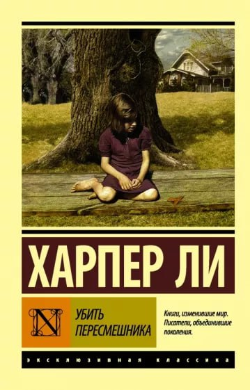
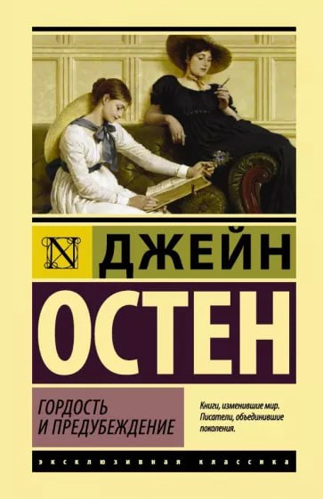
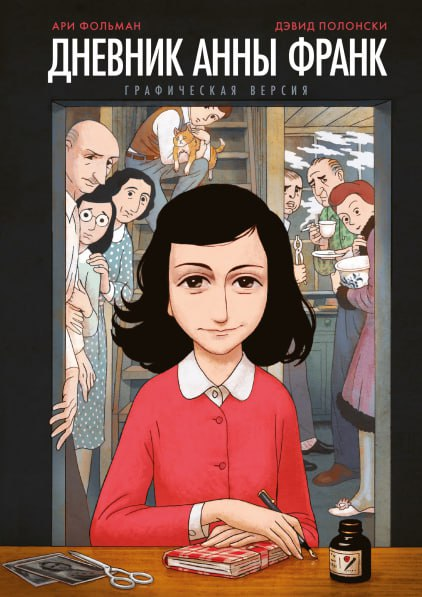
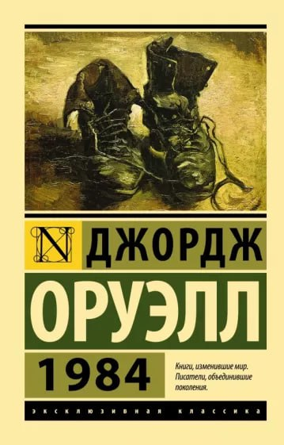
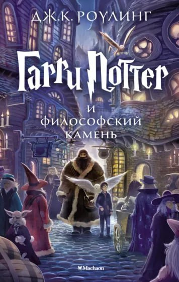
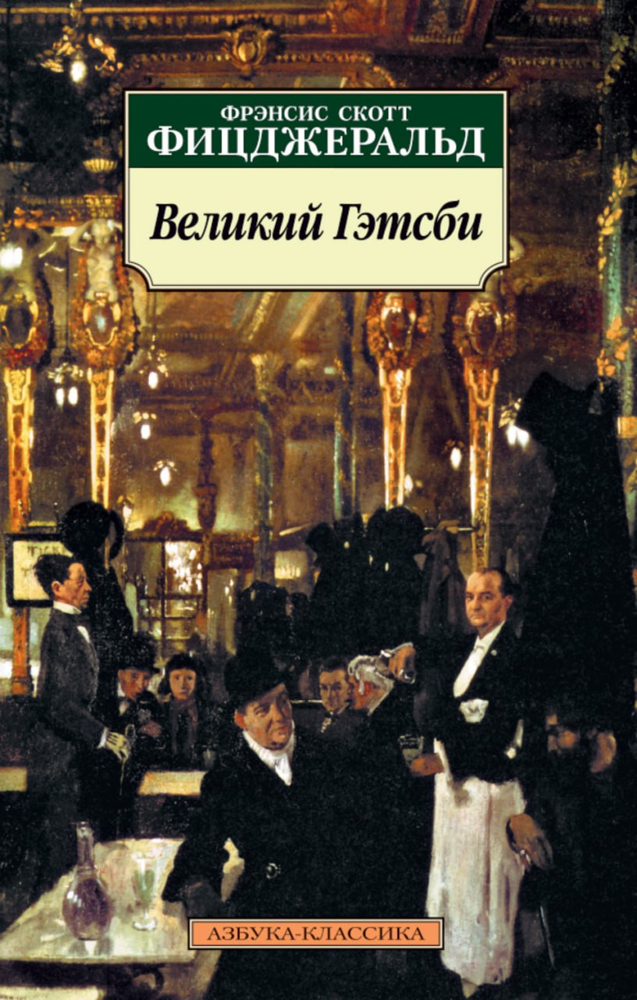

| Наименование и автор |
Описание |
Обложка |
| Убить пересмешника, Харпер Ли |
Книга начинается с предка семейства Финч — Саймона Финча. Будучи методистом,
он бежал от религиозной нетерпимости в Англии, поселился в штате Алабама, стал богат и
, несмотря на свои религиозные убеждения, купил несколько рабов. |
 |
| Гордость и предубеждение, Джейн Остен |
Роман начинается с беседы мистера и миссис Беннет о приезде молодого мистера Бингли в Незерфилд-парк.
Жена уговаривает мужа навестить соседа и свести с ним более тесное знакомство.
Она надеется, что мистеру Бингли непременно понравится одна из их пяти дочерей.
Мистер Беннет наносит визит молодому человеку, и тот через какое-то время наносит ответный. |
 |
| Дневник Анны Франк, Анна Франк |
Записи на нидерландском языке, которые вела еврейская девочка Анна Франк с 12 июня 1942 по 1 августа 1944 года
в период нацистской оккупации Нидерландов. С начала 1944 года Анна начала литературно обрабатывать свои записи
(в частности, заменяя имена действующих лиц), надеясь на публикацию дневника после освобождения Нидерландов, однако
эта работа осталась незавершённой. |
 |
| 1984, Джордж Оруэлл |
тематически, роман посвящён последствиям тоталитаризма, массового наблюдения и промывания мозгов людей в тоталитарном обществе.
Оруэлл, демократический социалист, создал тоталитарное государство в романе по образцу сталинского СССР и нацистской Германии |
 |
| Гарри Поттер и философский камень, Джоан Роулинг |
Сюжет строится вокруг главного героя, сироты Гарри Поттера, который узнаёт,
что он волшебник в его одиннадцатый день рождения. Обучаясь в школе школе чародейства и волшебства «Хогвартс»
, он заводит себе близких друзей, Рона Уизли и Гермиону Грейнджер, с помощью которых останавливает попытку
возвращения злого волшебника Волан-де-Морта, убившего родителей Гарри, когда ему было всего шесть месяцев. |
 |
| Великий Гэтсби, Ф. С. Фицджеральд |
В центре сюжета — любовная история с детективной и трагической развязкой. Действие развивается недалеко от Нью-Йорка,
на «золотом побережье» Лонг-Айленда, среди вилл богачей. В 1920-е годы вслед за хаосом
Первой мировой начался экономический бум и американское общество вступило в беспрецедентную полосу процветания.
В то же время «сухой закон» сделал многих бутлегеров миллионерами и дал значительный толчок развитию организованной преступности. |
 |
Наверх